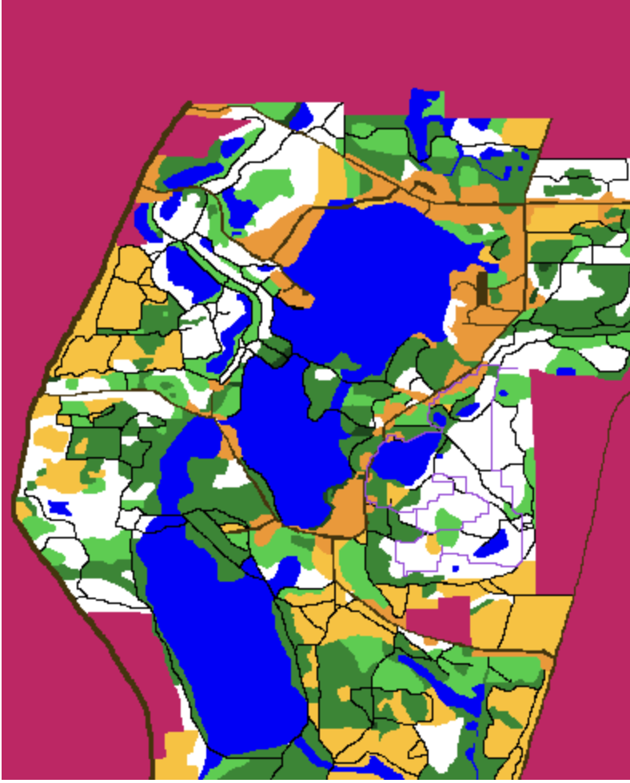

An A*-based pathfinding system that computes the optimal route across real-world terrain using satellite map colors, elevation data, and terrain-dependent movement costs.
The program takes a 395x500 terrain image, an elevation grid, and a control-point file as inputs. It determines the fastest traversal path between control points and overlays the result on the original map using pixel-level geospatial calculations.
Each pixel color in the terrain image maps to a movement cost multiplier. The A* algorithm uses these costs to find the path of least resistance across the landscape.
Below is an example input terrain image. Each color represents a different terrain type with its own movement cost. The pathfinder parses every pixel to build a weighted graph and overlays the computed optimal route in purple.

Example terrain image showing open land, forests, lakes, roads, and out-of-bounds regions